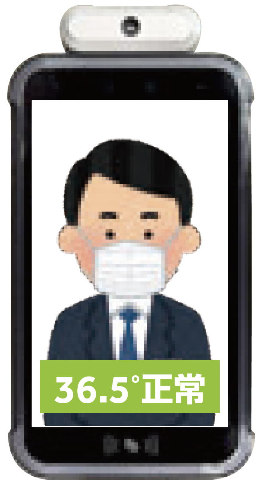
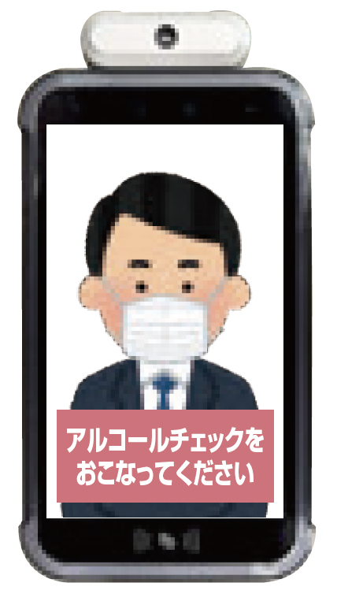
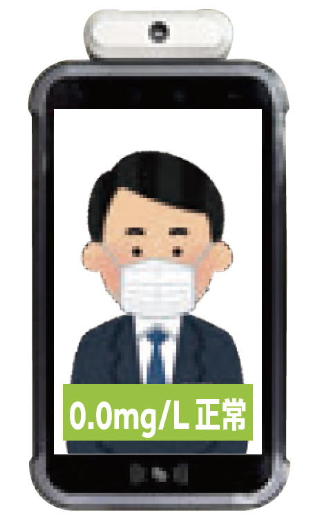
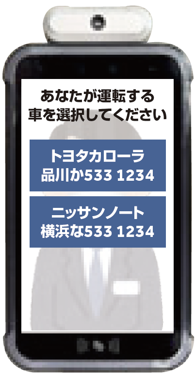
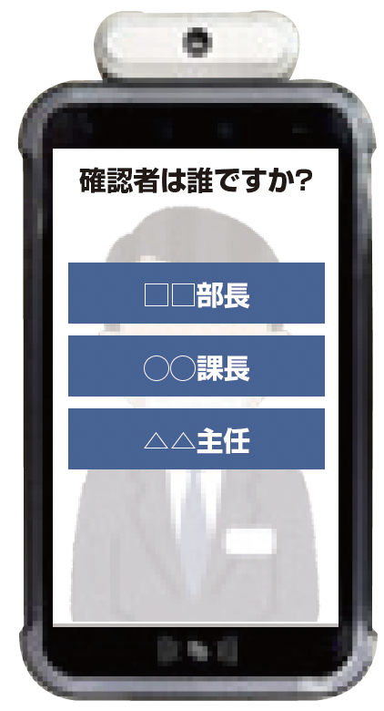
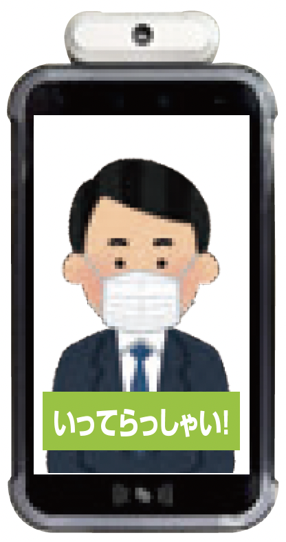
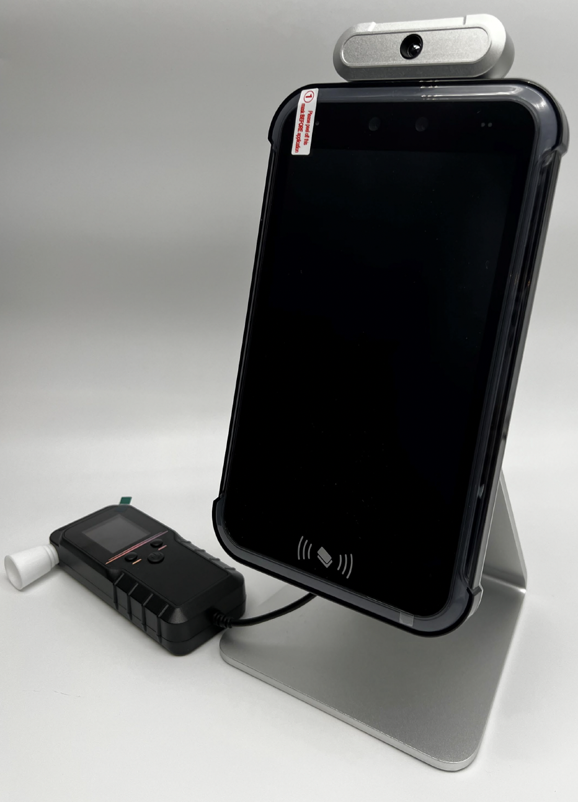
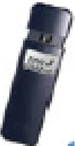

-
検温
-
アルコール
チェック -
データ
管理
をこれ一台で
アルコールチェッカー
2022年10月から
アルコール検知器での測定が義務化
社用車5台以上、もしくは定員11人以上の自動車を1台以上保有してる事業所において、
運転前後のアルコール検知器を用いた測定および測定記録の1年間の保管が2022年10月より義務化されます。
運転前後の測定と
1年間の測定結果の保管が必要に！
大変になりがちな運転者ごとの測定と測定結果の保管を
アルコールチェッカーを使うことで簡単に！
検温とアルコールチェック、その測定結果をこの一台で全て管理できる
新しい画期的なアルコールチェックシステムです。
アルコールチェッカー
3大特徴
-
familiar_face_and_zone
測定対象者を
顔認証で自動管理 -
touch_app
タッチパネルで
簡単操作 -
description
データを保存して
EXCEL出力可能
たったの3ステップ！
アルコールチェッカーシステムの使用の流れ
出発前検査
-
STEP1 顔認証+体温測定
カメラの前に立って顔認証による本人確認を行います。
AIによる自動判別なのでなりすましのおそれがありません。
顔認識と同時にサーマルカメラによって温度測定します。顔認証

マスクでOK！
わずか1秒で認識可能体温測定
 顔認証と同時に
体温を測定 -
STEP2 アルコール検知
本体に付属しているアルコール検知器に息を吹きかけて測定します。
測定結果は本体の記憶領域に自動的に保存されます。
保存されたデータはExcel形式で取り出し可能です。アルコール測定
 アルコール検知器に
息を吹きかける測定完了
 測定結果が
表示されて完了 -
STEP3 車両と責任者を選択
あらかじめ登録しているその日の業務で使用する車両とチェックに立ち会った責任者を選択します。
検査結果のデータは自動で顔写真とともに一括で保存されます。車両選択
 当日の業務で
使用する車両を選択責任者選択
 チェックに立ち会った
責任者を選択検査完了！
 出発時の検査は
わずか20秒で終了！
帰社後検査
-
STEP1 出社前検査と同じ作業を行う
出発と同じく、顔認証による本人確認・検温・アルコールチェック、車両・責任者の登録を行います。
これにより勤務中のアルコール摂取の有無や、車両の取り違えなどのヒューマンエラーの管理も可能です。 -
STEP2 データを保存
検査されたデータはシステムに保存されます。
その測定データを1年間保管したらOKです。
保存の手間は一切不要！
測定データの管理
アルコールチェックをした記録は、法改正によって1年間の保管が義務付けられています。
自動で人物認識された記録は本体に200,000件まで保存可能で、保管の手間がかかりません。
システム自動入力項目
プルダウン入力項目
クラウドで異なる事業所間でもデータ共有可能に！
(2023年夏サービス提供予定)よくある一般的な簡易型との違い
簡易型アルコールチェッカーとの比較
簡易型のアルコールチェッカーは安価ですが、記録などは全て手動で行わなければならず体温チェックも行えません。
弊社のアルコールチェックシステムと比べて作業時間・正確性に大きく劣ります。
-

弊社
アルコールチェッカー測定形式
電気化学式
(警察も採用する
ガスセンサー
高精度センサー)人物の自動認識
○
(自動認識で
管理も容易)体温測定
○
(アルコールと
一括測定可能)データ自動保存
○
(自動記録で
正確に保存可能) -

簡易型
アルコールチェッカー測定形式
半導体
(安価だが
ガスセンサー
精度が劣る)人物の自動認識
×
(なりすましで
不正が可能)体温測定
×
(別途測る必要があり
負担増加)データ自動保存
×
(手作業保存のため
漏れや誤記が起こる)
アルコールチェッカーはAmazonからお買い求めできます
購入する
-
アルコールチェッカー